import pandas as pd
import matplotlib.pyplot as plt
import numpy as np
import requests
import os
import sklearn as sk
from dotenv import load_dotenv
import time
import redef read_data():
load_dotenv()
API_key = os.getenv('ALPHAVANTAGE_API_KEY')
symbols = ["AAPL", "MSFT", "SPY", "TSLA", "GOOGL", "AMZN", "META"]
base_url = "https://www.alphavantage.co/query"
all_data = [] # List to store each symbol's data
for symbol in symbols:
print(f"Downloading weekly data for {symbol}...")
params = {
"function": "TIME_SERIES_WEEKLY_ADJUSTED",
"symbol": symbol,
"apikey": API_key
}
for attempt in range(3):
r = requests.get(base_url, params=params)
try:
data = r.json()
break
except ValueError:
print(f"Invalid response for {symbol}, attempt {attempt+1}")
print("Raw response:", r.text[:200])
time.sleep(15)
else:
print(f"Failed to get valid JSON for {symbol}, skipping...")
continue
if "Weekly Adjusted Time Series" not in data:
print(f"Error for {symbol}: {data}")
time.sleep(15)
continue
df = pd.DataFrame(data["Weekly Adjusted Time Series"]).T
# Keep default integer index, create new column 'Date'
df['Date'] = pd.to_datetime(df.index)
# Sort by Date if needed
df = df.sort_values('Date')
df = df[df['Date'].between(pd.Timestamp("2015-12-04"), pd.Timestamp("2020-12-04"))]
df['Symbol'] = symbol
df.reset_index(drop=True, inplace=True) # Drop old string index
all_data.append(df)
time.sleep(15)
return dfdef combine_data():
df1 = pd.read_csv("weekly_5yr_all_symbols.csv")
df2 = pd.read_csv("weekly_5yr_all_symbols_pt_2.csv")
# Clean column names (remove leading numbers like "1. Price")
df1.columns = [re.sub(r'^\d+\.\s*', '', col) for col in df1.columns]
df2.columns = [re.sub(r'^\d+\.\s*', '', col) for col in df2.columns]
# Reorder columns of df1
df1 = df1[['Symbol', 'Date'] + [col for col in df1.columns if col not in ['Symbol', 'Date']]]
# Reorder df2 the same way to guarantee matching column order
df2 = df2[df1.columns]
# Combine the two
df = pd.concat([df1, df2], ignore_index=True)
df = df.sort_values(['Symbol', 'Date']).reset_index(drop=True)def cleaning_pipeline(df):
df = df.sort_values(['Symbol', 'Date']).reset_index(drop=True)
# Clean column names (remove numbers like "1. open")
df.columns = [re.sub(r'^\d+\.\s*', '', col) for col in df.columns]
# Reorder columns
df = df[['Symbol', 'Date'] + [col for col in df.columns if col not in ['Symbol', 'Date']]]
df['close'] = df['close'].astype(float)
# Sort by Symbol and Date to make sure diff works correctly
df = df.sort_values(['Symbol', 'Date'])
# Create a new column with difference from previous close
df['Close_diff'] = df.groupby('Symbol')['close'].diff()
#Percentage Change from Beginning
df['Pct_Change'] = df.groupby('Symbol')['adjusted close'].transform(
lambda x: (x / x.iloc[0] - 1) * 100
)df = pd.read_csv("data/clean_weekly_stock_data.csv")def plot_closing_prices(df):
df['Date'] = pd.to_datetime(df['Date'])
symbols = df['Symbol'].unique()
for sym in symbols:
sub = df[df['Symbol'] == sym]
plt.figure(figsize=(10,4))
plt.plot(sub['Date'], sub['adjusted close'])
plt.title(f"Closing Price Over Time: {sym}")
plt.ylabel("Closing Price")
plt.tight_layout()
years = sorted(sub['Date'].dt.year.unique())
tick_locs = [pd.Timestamp(f'{y}-01-01') for y in years]
plt.xticks(ticks=tick_locs, labels=years, rotation=45)
plt.show()
# Create a new column with difference from previous close
df['Close_diff'] = df.groupby('Symbol')['close'].diff()
numeric_cols = [
'open', 'high', 'low', 'close',
'adjusted close', 'volume',
'dividend amount'
]
for col in numeric_cols:
df[col] = pd.to_numeric(df[col], errors='coerce')df.head()| Symbol | Date | open | high | low | close | adjusted close | volume | dividend amount | Close_diff | Pct_Change | |
|---|---|---|---|---|---|---|---|---|---|---|---|
| 0 | AAPL | 2020-12-04 | 116.97 | 123.780 | 116.810 | 122.250 | 119.0171 | 541563385 | 0.0 | NaN | 0.000000 |
| 1 | AAPL | 2020-12-11 | 122.31 | 125.950 | 120.150 | 122.410 | 119.1728 | 452278651 | 0.0 | 0.160 | 0.130822 |
| 2 | AAPL | 2020-12-18 | 122.60 | 129.580 | 121.540 | 126.655 | 123.3056 | 621758148 | 0.0 | 4.245 | 3.603264 |
| 3 | AAPL | 2020-12-24 | 125.02 | 134.405 | 123.449 | 131.970 | 128.4800 | 433757134 | 0.0 | 5.315 | 7.950874 |
| 4 | AAPL | 2020-12-31 | 133.99 | 138.789 | 131.720 | 132.690 | 129.1810 | 439740666 | 0.0 | 0.720 | 8.539865 |
from sklearn.linear_model import LinearRegression
from sklearn.model_selection import train_test_split
X = df[['close', 'volume']]
Y = df['adjusted close']
X_train, X_test, y_train, y_test = train_test_split(X, Y, test_size=0.2, shuffle=False)
model = LinearRegression()
model.fit(X_train, y_train)
preds = model.predict(X_test)
print("Coefficients:", model.coef_)
print("Intercept:", model.intercept_)
print(df.dtypes)Coefficients: [-3.46972730e-02 -1.78538931e-07]
Intercept: 311.23486061236014
Symbol object
Date object
open float64
high float64
low float64
close float64
adjusted close float64
volume int64
dividend amount float64
Close_diff float64
Pct_Change float64
dtype: objectdef plot_all_stocks_together(df,symbols=["AAPL", "MSFT", "SPY", "TSLA", "GOOGL", "AMZN", "META"]):
plt.figure(figsize=(12,6))
for sym in symbols:
sub = df[df['Symbol'] == sym]
plt.plot(sub['Date'], sub['Pct_Change'], label=sym)
plt.title("Stock Closing Prices Over Time")
plt.ylabel("Closing Price")
plt.legend()
plt.tight_layout()
plt.show()
plot_all_stocks_together(df)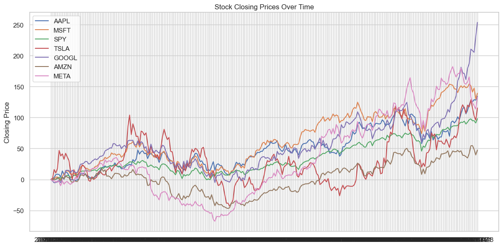
def plot_all_pct_change(df: pd.DataFrame, symbols=None):
df = df.copy()
df["Date"] = pd.to_datetime(df["Date"])
if symbols is None:
symbols = df["Symbol"].unique()
plt.figure(figsize=(12, 6))
for sym in symbols:
sub = df[df["Symbol"] == sym].sort_values("Date")
plt.plot(sub["Date"], sub["Pct_Change"], label=sym)
plt.title("Percent Change Over Time (All Stocks)")
plt.xlabel("Date")
plt.ylabel("Percent Change")
plt.legend()
plt.tight_layout()
plt.show()
plot_all_pct_change(df)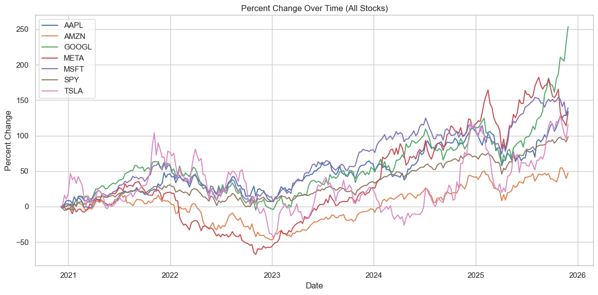
#comparing each stock to the SPY
def compare_stocks(stock1, stock2, df):
# Pull the data
s1 = df[df['Symbol'] == stock1].copy()
s2 = df[df['Symbol'] == stock2].copy()
# Ensure sorted
s1 = s1.sort_values("Date")
s2 = s2.sort_values("Date")
# -------------------------------
# 1) Closing Price Over Time
# -------------------------------
plt.figure(figsize=(12,5))
plt.plot(s1['Date'], s1['adjusted close'], label=stock1)
plt.plot(s2['Date'], s2['adjusted close'], label=stock2)
plt.title(f"{stock1} vs {stock2} — Closing Price Over Time")
plt.xlabel("Year")
plt.ylabel("Closing Price")
# Year tick labels only
years = sorted(df['Date'].dt.year.unique())
ticks = [pd.Timestamp(f"{y}-01-01") for y in years]
plt.xticks(ticks, years, rotation=45)
plt.legend()
plt.tight_layout()
plt.show()
# -------------------------------
# 2) Percentage Change Over Time
# -------------------------------
plt.figure(figsize=(12,5))
plt.plot(s1['Date'], s1['Pct_Change'], label=stock1)
plt.plot(s2['Date'], s2['Pct_Change'], label=stock2)
plt.title(f"{stock1} vs {stock2} — Percentage Change Over Time")
plt.xlabel("Year")
plt.ylabel("Percentage Change")
# Year tick labels only
plt.xticks(ticks, years, rotation=45)
plt.legend()
plt.tight_layout()
plt.show()#aggergate across all time and order stocks by which ones have performed best
performance = df.groupby('Symbol')['Pct_Change'].last().sort_values(ascending=False)
print("Stock Performance Over 5 Years:")
print(performance)Stock Performance Over 5 Years:
Symbol
GOOGL 253.558777
MSFT 139.219887
AAPL 134.294064
META 133.074953
TSLA 115.429688
SPY 98.254902
AMZN 47.487178
Name: Pct_Change, dtype: float64# Volatility Analysis
volatility = df.groupby('Symbol')['Close_diff'].std().sort_values(ascending=False)
print("\nStock Volatility (Standard Deviation of Weekly Close Differences):")
print(volatility)
Stock Volatility (Standard Deviation of Weekly Close Differences):
Symbol
AMZN 162.167585
GOOGL 143.205635
TSLA 56.950281
META 20.343873
MSFT 11.069256
SPY 10.546683
AAPL 6.821088
Name: Close_diff, dtype: float64from sklearn.linear_model import LinearRegression
from sklearn.metrics import r2_score, mean_squared_error
import seaborn as sns
import matplotlib.pyplot as plt
sns.set_theme(style="whitegrid")
results = []
for symbol, g in df.groupby('Symbol'):
g = g.sort_values('Date').copy()
# --- Create Return Columns ---
g['ret'] = g['adjusted close'].pct_change()
g['next_ret'] = g['ret'].shift(-1)
g['vol_change'] = g['volume'].pct_change()
# keep clean rows
g = g.dropna(subset=['ret', 'next_ret', 'vol_change'])
if len(g) < 10:
continue
# features and target
X = g[['ret', 'vol_change']]
Y = g['next_ret']
# time-based split
split_idx = int(len(g) * 0.8)
X_train, X_test = X.iloc[:split_idx], X.iloc[split_idx:]
Y_train, Y_test = Y.iloc[:split_idx], Y.iloc[split_idx:]
# linear regression
model = LinearRegression()
model.fit(X_train, Y_train)
preds = model.predict(X_test)
# store results
results.append({
'Symbol': symbol,
'coef_ret': model.coef_[0],
'coef_vol_change': model.coef_[1],
'intercept': model.intercept_,
'r2': r2_score(Y_test, preds),
'mse': mean_squared_error(Y_test, preds),
'n_obs': len(g)
})
# --- Scatterplot: ret vs next_ret ---
plt.figure(figsize=(6, 4))
sns.scatterplot(data=g, x='ret', y='next_ret', alpha=0.6)
plt.title(f"{symbol} Return vs Next-Period Return")
plt.xlabel("This Period Return")
plt.ylabel("Next Period Return")
plt.axhline(0, linestyle='--', linewidth=0.8)
plt.axvline(0, linestyle='--', linewidth=0.8)
plt.tight_layout()
plt.show()
# --- Actual vs Predicted ---
plot_df = g.iloc[split_idx:].copy()
plot_df['Actual'] = Y_test.values
plot_df['Predicted'] = preds
plt.figure(figsize=(8, 5))
sns.lineplot(data=plot_df, x='Date', y='Actual', label='Actual')
sns.lineplot(data=plot_df, x='Date', y='Predicted', label='Predicted')
plt.title(f"{symbol} Actual vs Predicted Returns")
plt.xlabel("Date")
plt.ylabel("Return")
plt.xticks(rotation=45)
plt.tight_layout()
plt.show()
results_df = pd.DataFrame(results)
results_df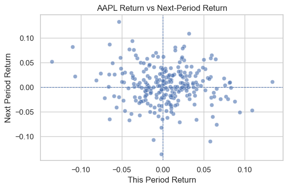
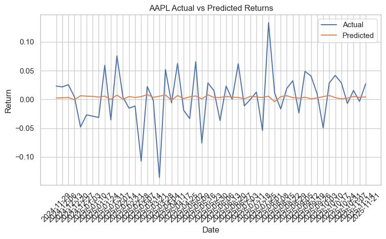
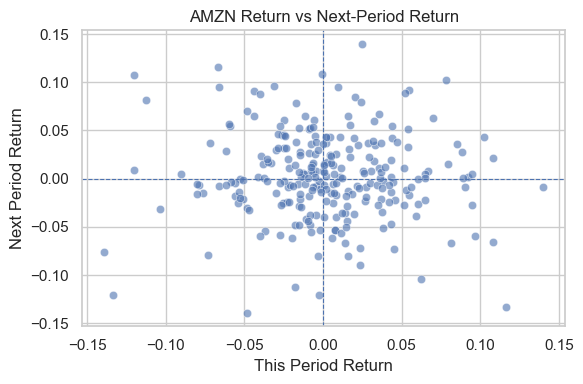

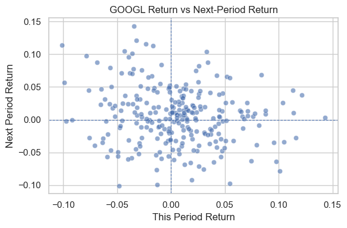
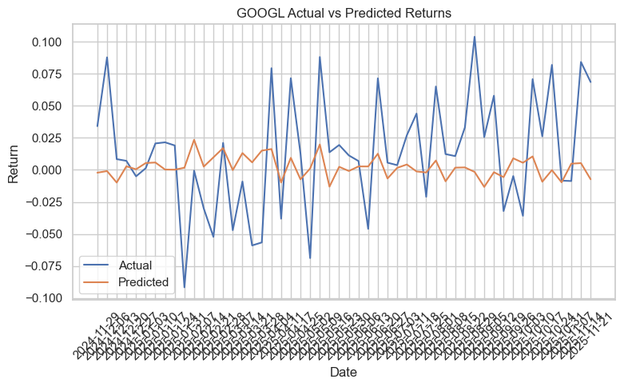
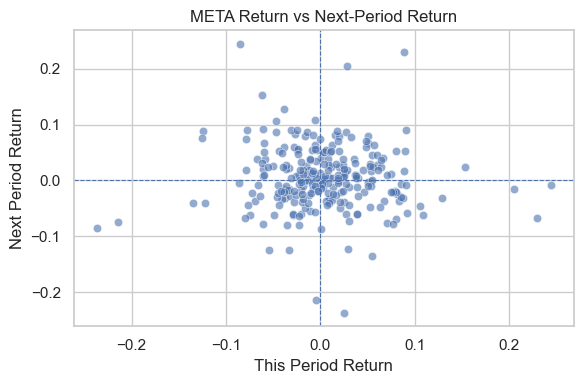
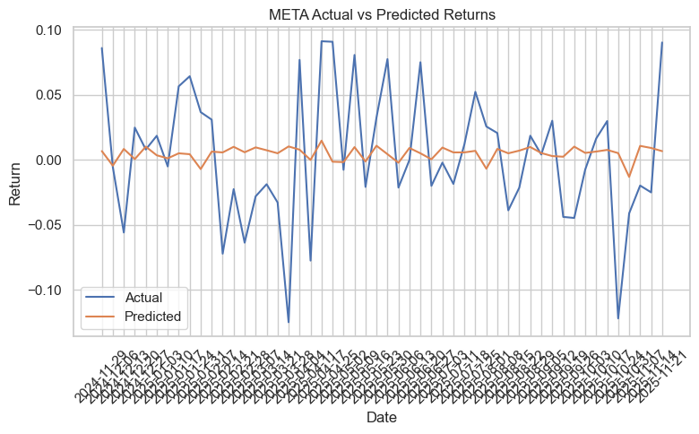
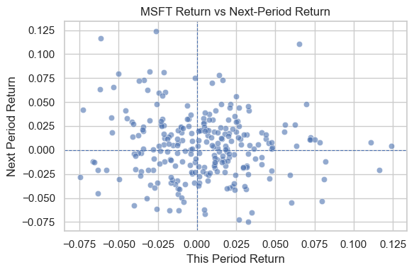
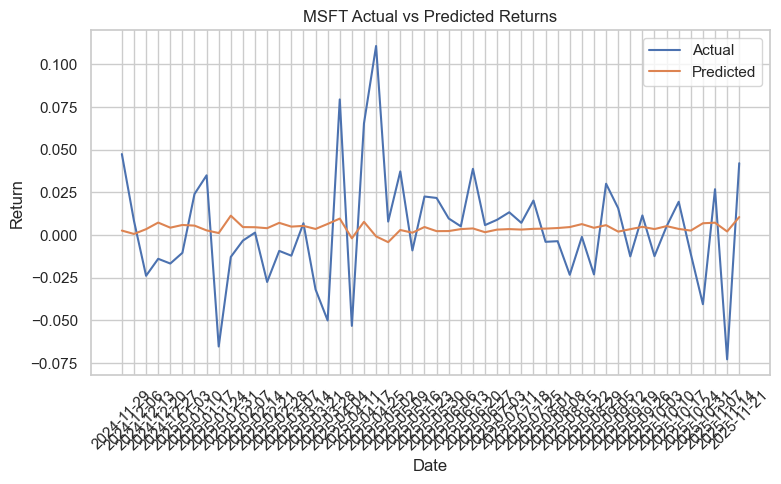
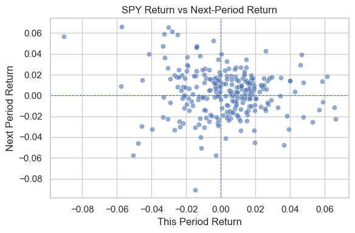
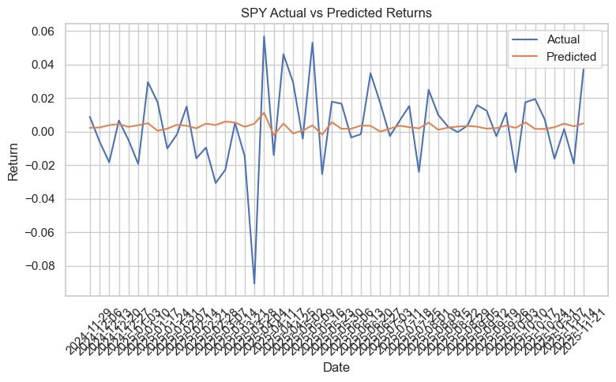
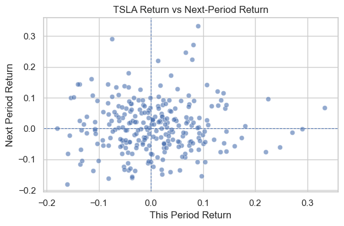
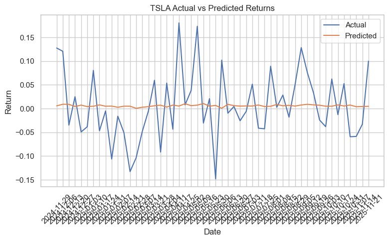
| Symbol | coef_ret | coef_vol_change | intercept | r2 | mse | n_obs | |
|---|---|---|---|---|---|---|---|
| 0 | AAPL | -0.051591 | -0.003746 | 0.004285 | 0.015894 | 0.002005 | 259 |
| 1 | AMZN | -0.035565 | -0.002252 | 0.002782 | 0.006479 | 0.001831 | 259 |
| 2 | GOOGL | -0.188897 | 0.003452 | 0.004194 | -0.065958 | 0.002168 | 259 |
| 3 | META | -0.055832 | -0.007595 | 0.006115 | 0.000771 | 0.002606 | 259 |
| 4 | MSFT | -0.084277 | 0.001665 | 0.004286 | 0.010387 | 0.001083 | 259 |
| 5 | SPY | -0.092630 | -0.000333 | 0.003208 | 0.032825 | 0.000551 | 259 |
| 6 | TSLA | 0.028931 | -0.001242 | 0.005950 | 0.001189 | 0.005211 | 259 |